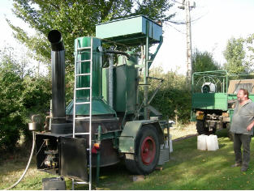
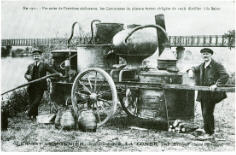
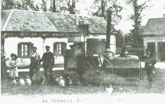

|
|
|
La Ferme de La Godinière
27410
Le Noyer en Ouche
dernière mise à jour de cette page : 22.10.2009
Notre ancienne adresse web :cidre.rene.lesur.club.fr est
devenue obsolète et est
transférée sur
http://pagesperso-orange.fr/lagodiniere27/
La Fabrication du
Cidre
à la Ferme de la
Godinière
Suite de la page précédente : La Fabrication du Cidre,
La Distillation
|
La distillation du cidre se fait sur place avec un alambic par un Bouilleur de Cru ambulant. Le Calvados est vieilli de longues années en fûts de chêne.
Traditionnellement, il est d'usage de déguster le Calvados au milieu du repas, c'est le trou normand, mais aussi en digestif ou en cocktail. Il entre dans la préparation de recettes de cuisine. |
 |
|
 |
 |
|
Distillation à l'atelier public |
Distillation à domicile |
|
Le cidre qui n'est pas mis en bouteilles continuera de fermenter jusqu'à transformation complète du sucre en alcool. Il sera alors distillé pour nous donner l'eau de vie de cidre qui, si elle est produite dans la zone délimitée pourra bénéficier de l'appellation Calvados ce qui est le cas chez nous. A noter qu'il n'est pas nécessaire de soutirer le cidre destiné à être distillé, il restera sur lie.
Pour être
commercialisé, Le Calvados aura dû obtenir son certificat d'agrément délivré par l'IDAC (anciennement
INAO). |
|
|
|
|
Plus de détails : cliquez
|
Retour
Les Produits
ou
Accueil ou
Plan du
site |
En Savoir plus sur :
Ecrivez nous pour donner votre impression et votre suggestion, merci.
Ma messagerie est protégée par Avast
Conception et Réalisation : René Lesur